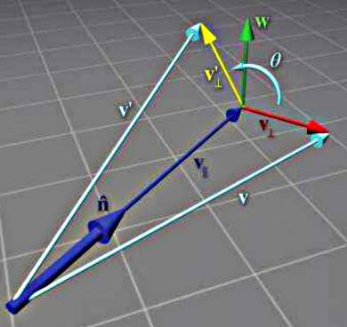
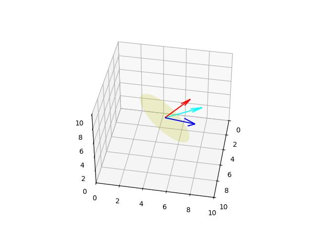
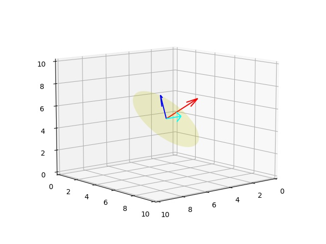
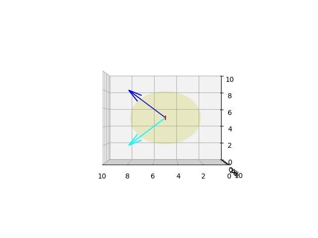
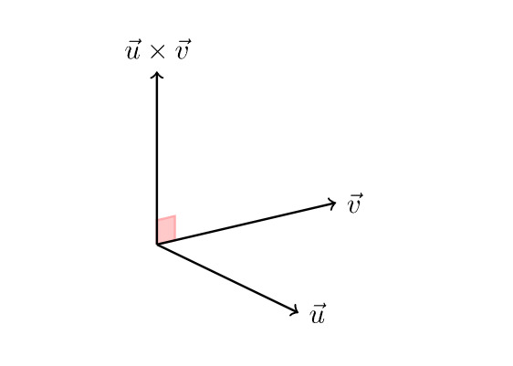

Herhangi Bir Eksen (Vektör) Etrafında Dönüş
Daha öne Rodriguez yöntemi ile yaptığımız döndürme yaklaşımını bir başka teknikle göstereceğiz. Bulmak istediğimiz \(\vec{n}\) etrafında \(\theta\) dönüşü yaptıracak bir matris, yani öyle bir matris \(R(\vec{n},\theta)\) arıyoruz ki bu matrisle \(\vec{v}\) vektörünü sağdan çarpınca \(\vec{v}'\) elde edilecek ve bu yeni vektör \(\vec{v}\) vektörünün \(\vec{n}\) etrafında \(\theta\) kadar dönmüş hali olacak [1, sf. 142]. Yazının geri kalanında \(\vec{v} = v\), \(\vec{n} = n\)..
\[ v' = v R(n,\theta) \]
\(R(n,\theta)\) matrisini türetmek için önce \(v'\) vektörünü \(v,n,\theta\) bazında temsil etmeyi görelim. Ana fikir problemi \(n\)’ye dik olan düzlem üzerinde çözmek, ki bu şekilde 3 boyutlu problemi 2 boyutlu bir probleme indirgemiş oluyoruz. İndirgeme için \(v\) vektörünü iki \(v_\parallel\) ve \(v_\perp\) vektörüne ayıracağız, öyle ki \(v = v_\parallel + v_\perp\). Sonra bu ki vektörü ayrıca döndüreceğiz ve böylece onların toplamları da dönmüş olacak, yani \(v' = v'_\parallel + v'_\perp\). Buraya kadar gördüklerimiz Rodriguez yaklaşımına benziyor.

Tekniğin iyi tarafı \(v_\parallel\) vektörü \(n\) vektörüne paralel olduğu için \(n\) etrafında dönüşten etkilenmez, o zaman sadece \(v_\perp\) vektörünü döndürmek yeterlidir, böylece \(v' = v_\parallel + v'_\perp\) hesaplanabilir.
Hesap için şu adımları takip ediyoruz,
Bu vektörlerle nasıl \(v'\) hesaplayacağız? Dikkat edersek \(w\) ve \(v_\perp\) bir 2D kordinate uzayı oluşturuyor. \(v'_\perp\) vektörü \(v'\) yi bu uzayda \(\theta\) kadar döndürerek elde edilebilir. Bu dönüşün formülünün
\[ v'_\perp = \cos \theta v_\perp + \sin \theta w \]
olduğunu biliyoruz (ispatı bu anlatım ardından paylaşılıyor).
Şimdi eldeki formüllere bakalım:
\[ v_\parallel = (v \cdot n) n \]
\[ v_\perp = v - v_\parallel \]
\[ = v - (v \cdot n) n \]
\[ w = n \times v_\perp \]
\[ = n \times (v - v_\parallel) \]
\[ = n \times v - n \times v_\parallel \]
\(n\) ve \(v_\parallel\) birbirine paralel olduğu için çapraz çarpımları sıfırdır,
\[ = n \times v - 0 \]
\[ w = n \times v \]
\[ v'_\perp = \cos \theta v_\perp + \sin \theta w \]
\[ = \cos \theta (v - (v \cdot n) n) + \sin \theta (n \times v) \]
Üstteki değeri \(v'\) formülü içine sokalım,
\[ v' = v'_\perp + v_\parallel \]
\[ v' = \cos \theta (v - (v \cdot n) n) + \sin \theta (n \times v) + (v \cdot n) n \qquad (5) \]
Eğer (5) formülünü matris formunda göstermek istiyorsak, baz vektörleri \([\begin{array}{ccc} 1 & 0 & 0 \end{array}]^T\), \([\begin{array}{ccc} 0 & 1 & 0 \end{array}]^T\), \([\begin{array}{ccc} 0 & 0 & 1 \end{array}]^T\) teker teker (5) ile çarpıp sonuçları bir diğer 3 x 3 matrisin kolonlarına yazabiliriz [1, sf. 143][1, sf. 757], böylece alttaki matrisi elde ederiz,
\[ \scriptsize R(n,\theta) = \left[\begin{array}{ccc} n_x^2(1-\cos\theta)+\cos\theta & n_x n_y (1-\cos\theta)+n_x \sin\theta & n_x n_z (1-\cos\theta)-n_x\sin\theta\\ n_x n_y (1-\cos\theta)-n_z\sin\theta & n_y^2(1-\cos\theta)+\cos\theta & n_y n_z (1-\cos\theta)n_x\sin\theta\\ n_x n_z (1-\cos\theta)+n_y \sin\theta & n_y n_z (1-\cos\theta)-n_x \sin\theta & n_z^2 (1-\cos\theta)+\cos\theta \end{array}\right] \qquad (2) \]
import sys; sys.path.append('../phy_072_rot')
from mpl_toolkits.mplot3d import Axes3D
import plot3d
def rotate(v, n, theta):
return np.cos(theta) * ( v - np.dot(v,n) ) + \
np.sin(theta)* np.cross(n,v) + \
np.dot(v,n)*n
o1 = np.array([5,5,5])
v1 = np.array([3,3,3])
n1 = np.array([-1/3.,2/3.,2/3.])
theta = np.deg2rad(20)
v1r = rotate(v1, n1, theta)
fig, ax = plt.subplots(1, 1, subplot_kw={'projection': '3d'})
plot3d.plot_vector(ax, o1, v1)
plot3d.plot_vector(ax, o1, v1r, 'cyan')
plot3d.plot_vector(ax, o1, 3*np.array(n1), 'red')
plot3d.plot_plane(ax, o1, n1, size=3)
ax.view_init(elev=40., azim=10)
plt.savefig('phy_073_rot_02.jpg')
Teori
3D A,B vektörleri birbirine dikgen ve bir 2D uzay yaratıyorlar, ki sanki A vektörü \(x\) ekseni, B ise \(y\) ekseni. A vektörünün \(\theta\) açısı kadar döndürülmesi \(Y = \cos \theta A + \sin \theta B\) vektörünü verir (üstteki problemde \(A = v_\perp\), \(B = w\)).
İspat
A ve B 3D uzayında bir 2D düzlemi kapsayan iki dikgen vektör ise, A ve B’yi bu 2D düzlem için baz vektörleri olarak düşünebiliriz. A ve B tarafından kapsanan düzlemdeki herhangi bir X vektörü, A ve B’nin bir doğrusal birleşimi olarak ifade edilebilir:
\(X = x_A A + x_B B\)
Burada, \(x_A\) ve \(x_B\), X’in A ve B doğrultularındaki bileşenleridir.
A vektörü için, {A, B} bazındaki temsili, A doğrultusundaki bileşenin 1 ve B doğrultusundaki bileşenin 0 olduğu durumdur. Yani, A’yı bu 2D baz sisteminde “x ekseni” ve B’yi “y ekseni” olarak düşünebiliriz, burada A’nın “koordinatları” (1, 0) olur.
Şimdi, A vektörünü A ve B’nin kapsadığı düzlem içinde \(\theta\) açısı kadar döndürelim. Ortaya çıkan vektöre Y diyelim. Standart bir 2D Kartezyen koordinat sisteminde, koordinatları \((x, y)\) olan bir vektör \(\theta\) açısı kadar saat yönünün tersine döndürüldüğünde, yeni koordinatları \((x', y')\) şu şekilde bulunur:
\(x' = x \cos \theta - y \sin \theta\)
\(y' = x \sin \theta + y \cos \theta\)
Bizim durumumuzda, A vektörünün {A, B} bazındaki başlangıç “koordinatları” \((1, 0)\)’dır. A’yı \(\theta\) kadar döndürdüğümüzde, ortaya çıkan Y vektörünün {A, B} bazındaki yeni “koordinatları”, \((y_A, y_B)\), \((x, y) = (1, 0)\) kullanılarak 2D döndürme formülleriyle bulunabilir:
\(y_A = 1 \cdot \cos \theta - 0 \cdot \sin \theta = \cos \theta\)
\(y_B = 1 \cdot \sin \theta + 0 \cdot \cos \theta = \sin \theta\)
Dolayısıyla, döndürülen Y vektörünün {A, B} bazındaki bileşenleri, A doğrultusunda \(\cos \theta\) ve B doğrultusunda \(\sin \theta\) olur.
Şimdi Y vektörünü, bu bileşenleri kullanarak baz vektörler A ve B’nin doğrusal birleşimi olarak yazabiliriz:
\(Y = y_A A + y_B B\)
\(Y = \cos \theta A + \sin \theta B\)
Bu, A vektörünün A ve B’nin kapsadığı 2D düzlem içinde \(\theta\) açısı kadar döndürülmesinin \(Y = \cos \theta A + \sin \theta B\) vektörünü verdiğini kanıtlar. Bu, bir 2D Kartezyen düzlemde x eksenindeki \((1, 0)\) vektörünün \(\theta\) kadar döndürüldüğünde \((\cos \theta, \sin \theta)\)’ye dönmesiyle benzerdir. A ve B vektörleri, 3D uzayında bu 2D dönüşüm için eksenleri sağlar.
Dörtlü Grup / Kuaterniyon (Quaternions)
Bir vektörü, fiziksel objeyi döndürmek için çok faydalı bir diğer kavram kuaterniyon kavramı. Kuaterniyon matematiği hayali (imaginery, complex) sayıları baz alan bir cebir sistemidir, William Hamilton tarafından keşfedilmiştir. Bir kuaterniyon sayı dört reel sayı ve üç tane hayali sayı içerir,
\[ q = [\begin{array}{cccc} w & x & y & z \end{array}] \]
olarak yazılabilir, ki son üç sayı hayalidir, ya da
\[ q = w + i x + j y + k z \]
Görüldüğü gibi bu cebirin olabilmesi için sadece \(i\) değil, ek olarak \(j,k\) hayali sayıları sisteme ekleniyor, ve önkabul olarak şu ifade ileri sürülüyor [1, sf. 247],
\[ i^2 = j^2 = k^2 = ijk = -1 \]
Üstteki ifadelerden geri kalan eşitlikler türetilebilir [4, sf. 170], mesela
\[ ijk = -1 = k^2 \Rightarrow ij = k \]
Ayrıca \(ij = -ji\), yani sırabağımsızlık yoktur.
Tüm önverili ve türetilmiş ifadeleri biraraya koyarsak,
\[ i^2 = j^2 = k^2 = ijk = -1 \]
\[ ij = -ji = k \]
\[ jk = -kj = i \]
\[ ki = -ik = j \]
Üsttekilere Hamilton’un kurallları adı veriliyor.
Eşlenik (conjugate) hesabı bir \(q\) için \(q^{\ast}\) olarak gösterilir, hayali olan kısmın negatiflenmesi ile elde edilir, yani
\[ q^{\ast} = [\begin{array}{cccc} w & -x & -y & -z \end{array}] \]
Tersi (inverse) işlemi ise eşleniğin büyüklüğe bölünmüş halidir,
\[ q^{-1} = \frac{q^{\ast}}{|| q ||} \]
Kuaterniyon çarpımı mesela \(q_1,q_2\) arasında, parantez içi dört sayının çarpım ve toplamsal açılımı yapılıp üstteki kurallar uygulanarak elde edilebilir [1, sf. 773],
\[ q_1 = w_1 + x_1 i + y_1 j + z_1 k \]
\[ q_2 = w_2 + x_2 i + y_2 j + z_2 k \]
\[\begin{align*} q_1 q_2 = w_1 w_2 + w_1 x_2 i + w_1 y_2 j + w_1 z_2 k + \\ x_1 w_2 i + x_1 x_2 i^2 + x_1 y_2 ij x_1 z_2 ik + \\ y_1 w_2 j + y_1 x_2 ji + y_1 y_2 j^2 + y_1 z_2 jk + \\ z_1 w_2 k + z_1 x_2 ki + z_1 y_2 kj + z_1 z_2 k^2 \end{align*}\]
\[\begin{align*} = w_1 w_2 + w_1 x_2 i + w_1 y_2 j + w_1 z_2 k + \\ x_1 w_2 i + x_1 x_2 (-1) + x_1 y_2 k + x_1 z_2 (-j) + \\ y_1 w_2 j + y_1 x_2 (-k) y_1 y_2 (-1) + y_1 z_2 (i) + \\ z_1 w_2 k + z_1 x_2 j + z_1 y_2 (-i) + z_1 z_2 (-1) \end{align*}\]
Nihai çarpım denklemi
\[\begin{align*} = w_1 w_2 - x_1 x_2 - y_1 y_2 - z_1 z_2 + \\ (w_1 x_2 + x_1 w_2 + y_1 z_2 - z_1 y_2 + \\ (w_1 y_2 + y_1 w_2 + z_1 x_2 - x_1 z_2) j + \\ (w_1 z_2 + z_1 w_2 + x_1 y_2 - y_1 x_2) k \end{align*}\]
Ve nihayet döndürme işleminin nasıl yapılacağına geliyoruz, \(n\) vektörü etrafında bir \(p\) noktasına \(\theta\) dönüşü yaptırabilmek için bir şu şekilde bir kuaterniyon yaratıyoruz,
\[ q = [\begin{array}{cccc} \cos(\theta/2) & \sin(\theta/2) n_x & \sin(\theta/2) n_y & \sin(\theta/2) n_z \end{array}] \]
\(p\) noktasını skala değeri 0 olan bir diğer kuaterniyon olarak yazıyoruz,
\[ p = [\begin{array}{cccc} 0 & p_x & p_y & p_z \end{array}] \]
Ve şu şekilde bir çarpım yapıyoruz,
\[ p' = q p q^{-1} \]
Dikkat, üstteki yöntem üç boyutlu bir gerçek vektörü döndürmek için bulunmuştur, reel değere 0 verip diğer x,y,z değerlerini vektörün geri kalan yerlerine yazarak aslında bir numara gerçekleştiriyoruz, ki kuaterniyon cebiri bu değeri alıp 4 boyutlu uzaya “gömsun” ve onu kuaterniyon cebirine dahil edebilsin. Dönüş bu uzayda \(q\) çarpımı ile gerçekleşiyor, ve bu hesap bitince \(q^{-1}\) yani \(q\)’nun tersi ile başlangıç uzayına dönüyoruz.
Üstteki formülün bir vektör dönüşüne eşdeğer olduğunun ispatı bu yazının altında bulunabilir.
Kod üzerinde görelim [3],
import math
def q_mult(q1, q2):
w1, x1, y1, z1 = q1
w2, x2, y2, z2 = q2
w = w1 * w2 - x1 * x2 - y1 * y2 - z1 * z2
x = w1 * x2 + x1 * w2 + y1 * z2 - z1 * y2
y = w1 * y2 + y1 * w2 + z1 * x2 - x1 * z2
z = w1 * z2 + z1 * w2 + x1 * y2 - y1 * x2
return w, x, y, z
def q_conjugate(q):
w, x, y, z = q
return (w, -x, -y, -z)
def normalize(v, tolerance=0.00001):
mag2 = sum(n * n for n in v)
if abs(mag2 - 1.0) > tolerance:
mag = math.sqrt(mag2)
v = tuple(n / mag for n in v)
return v
def axisangle_to_q(v, theta):
v = normalize(v)
x, y, z = v
theta /= 2
w = math.cos(theta)
x = x * math.sin(theta)
y = y * math.sin(theta)
z = z * math.sin(theta)
return w, x, y, z
def rotate(q1, v1):
q2 = (0.0,) + v1
tmp1 = q_mult(q1, q2)
tmp2 = q_conjugate(q1)
return q_mult(tmp1, tmp2)[1:]
o1 = (5.0,5.0,5.0)
v1 = (3.0,3.0,3.0)
n1 = (-1/3.,2/3.,2/3.)
theta = np.deg2rad(30)
r1 = axisangle_to_q(n1, theta)
v1r = rotate(r1, v1)
fig, ax = plt.subplots(1, 1, subplot_kw={'projection': '3d'})
plot3d.plot_vector(ax, o1, v1)
plot3d.plot_vector(ax, o1, v1r, 'cyan')
plot3d.plot_vector(ax, o1, 3*np.array(n1), 'red')
plot3d.plot_plane(ax, o1, n1, size=3)
ax.view_init(elev=10., azim=50)
plt.savefig('phy_073_rot_03.jpg')
Farklı bir açıdan daha bakalım, bazen kamera bakış yönüne göre sonuç tam belli olmayabiliyor. Etrafında dönüş yapılan \(n\) vektörü direk \(y\) eksenine bakıyor olsun, kamerayı o yöne koyalım ve 90 derece dönüş yapalım,
o2 = (5.0,5.0,5.0)
v2 = (3.0,3.0,3.0)
n2 = (0, 1, 0)
theta = np.deg2rad(90)
r2 = axisangle_to_q(n2, theta)
v2r = rotate(r2, v2)
fig, ax = plt.subplots(1, 1, subplot_kw={'projection': '3d'})
plot3d.plot_vector(ax, o2, v2)
plot3d.plot_vector(ax, o2, v2r, 'cyan')
plot3d.plot_vector(ax, o2, 3*np.array(n2), 'red')
plot3d.plot_plane(ax, o2, n2, size=3)
ax.view_init(elev=0., azim=90)
plt.savefig('phy_073_rot_04.jpg')
Kuaterniyon hesabının rotasyon yaptığının belki de bir diğer ispatı \(q v q^{-1}\) hesabını (2) formundaki rotasyon matrisı formatında gösterebilmek. (2) matrisindeki her hücreyi teker teker alıp onu \(n_x,n_y,n_z,\theta\) değişkenlerinden \(w,x,y,z\) kuaterniyon değişkenlerine tercüme edebilirsek, ve bu matrisin döndürme yaptığını görürsek bir tür ispat elde etmiş olabiliriz, detaylar için [1,sf. 282].
Farklı Teorik Yaklaşım
Buraya kadar güzel, fakat Hamilton’un sunduğu şekildeki teoride bazı boşluklar var, mesela \(ijk = -1\) önkabulü biraz zorlanmış gibi geliyor, daha doğrusu rasgele (arbitrary) seçilmiş gibi. Bir şey denenmiş ve işlediği görülünce kullanılmaya devam edilmiş. Fakat bir önkabul olsa da bu ifadenin, ve ek hayali sayılar \(j,k\) seçimlerinin daha baz bir temelden geliyor olmaları iyi olurdu.
[5] bağlantısında bu tür açıklamalar görüyoruz. Bunlardan biri der ki \(i,j,k\) aslında \(\mathbb{R}^4\) uzayında birer bazdır,
\[ i = \left[\begin{array}{cccc} 0 & 1 & 0 & 0 \\ -1 & 0 & 0 & 0 \\ 0 & 0 & 0 & 1\\ 0 & 0 & -1 & 0 \end{array}\right], \quad j = \left[\begin{array}{cccc} 0 & 0 & 0 & -1 \\ 0 & 0 & -1 & 0 \\ 0 & 1 & 0 & 0\\ 1 & 0 & 0 & 0 \end{array}\right], \quad k = \left[\begin{array}{cccc} 0 & 0 & -1 & 0 \\ 0 & 0 & 0 & 1 \\ 1 & 0 & 0 & 0\\ 0 & -1 & 0 & 0 \end{array}\right] \]
Ve Hamilton kuralları bu baz üzerinden hesaplanabilir,
i = np.array([[0,1,0,0],[-1,0,0,0],[0,0,0,1],[0,0,-1,0]])
j = np.array([[0,0,0,-1],[0,0,-1,0],[0,1,0,0],[1,0,0,0]])
k = np.array([[0,0,-1,0],[0,0,0,1],[1,0,0,0],[0,-1,0,0]])np.dot(i,i)Out[1]:
array([[-1, 0, 0, 0],
[ 0, -1, 0, 0],
[ 0, 0, -1, 0],
[ 0, 0, 0, -1]])np.dot(j,j)Out[1]:
array([[-1, 0, 0, 0],
[ 0, -1, 0, 0],
[ 0, 0, -1, 0],
[ 0, 0, 0, -1]])np.dot(k,k)Out[1]:
array([[-1, 0, 0, 0],
[ 0, -1, 0, 0],
[ 0, 0, -1, 0],
[ 0, 0, 0, -1]])i.dot(j).dot(k)Out[1]:
array([[-1, 0, 0, 0],
[ 0, -1, 0, 0],
[ 0, 0, -1, 0],
[ 0, 0, 0, -1]])Çarpımlarda elde edilen sonucun eksi birim (identity) matris olduğuna dikkat, yani \(jk = -1\) yerine \(JK = -I\) elde ediyoruz ki \(I\) standart notasyonda birim matristir (paylaşılan bağlantıda farklı sembol \(U\) kullanılmış çünkü \(I\) matrisi \(i\)’nin bazı olarak kullanılıyor, semboller karışıklık yaratmasın).
Bu yaklaşım rasgele bir \(ijk=-1\) seçiminden ziyade problemi bir baz seçimi haline dönüştürüyor, ki Lineer Cebir’de baz seçimi her zaman yapılır, bir transformasyon olduğunda “yeni baz nedir?’’ diye sorarız, bu daha anlaşılır bir kavramdır.
[1, sf. 264]’te kuaterniyon ve matris cebiri bağlantısı daha ileri götürülüyor, ve niye \(\theta\) yerine \(\theta / 2\) kullanılmış olabileceği açıklanıyor. Bu açıklamaya göre hiç kuaterniyon cebirine girmeden direk kuaterniyon sayılarına tekabül eden matrisler ile temel lineer cebir işlemleri yaparak aynı sonuca erişmek mümkündür.
Paketler
[6] bağlantısında faydalı bazı kodlar var, onu euclid.py
içinde bu dizine kaydettik, kullanım örnekleri,
import euclid
q1 = euclid.Quaternion(1,1,1,1)
q1Out[1]: Quaternion(real=1.00, imag=<1.00, 1.00, 1.00>)q1.conjugated()Out[1]: Quaternion(real=1.00, imag=<-1.00, -1.00, -1.00>)q2 = euclid.Quaternion(2,2,4,4)
q1 * q2Out[1]: Quaternion(real=-8.00, imag=<4.00, 4.00, 8.00>)Kuaterniyon Döndürmesinin Doğruluğunu Göstermek
Bu makalede [7], kuaterniyon döndürmesinin doğru olduğunu gösteren cebirsel bir ispat sunacağız. İyi bilindiği gibi, bir \(\vec{v}\) vektörünü, \(\vec{u}\) döndürme ekseni etrafında \(\theta\) açısıyla kuaterniyonları kullanarak döndürebiliriz. Bu, aşağıdaki hesaplama ile yapılır:
\[ \mathbf{q} \vec{v} \mathbf{q}^{-1}. \]
Burada \(\mathbf{q}\) bir kuaterniyondur:
\[ \mathbf{q} = \cos\left(\frac{\theta}{2}\right) + \vec{u}\sin\left(\frac{\theta}{2}\right) \qquad (1) \]
Ancak, bu hesaplamanın böyle bir döndürmeyle sonuçlanması hiç de bariz değildir. Bu makalede, bu hesaplamanın gerçekten de istenen döndürmeyle sonuçlandığını göstereceğiz. Bu, (1)’in Rodrigues’in döndürme formülüne [8] eşdeğer olduğunu göstererek yapılacaktır. (1)’in döndürmesi Rodrigues’in formülü kullanılarak şu şekilde hesaplanabilir:
\[ \vec{v} \cos(\theta) + (\vec{u} \times \vec{v}) \sin(\theta) + \vec{u}(\vec{u} \cdot \vec{v})(1 - \cos(\theta)) \qquad (2) \]
Denklem (2)’nin neden istediğimiz döndürmeyle sonuçlandığı çok daha açıktır. Bu nedenle, (1) ve (2)’nin eşdeğerliğini gösterecek ve böylece kuaterniyon döndürmesinin beklediğimizi yaptığından emin olacağız.
Kuaterniyon Çarpımı
Bir basamak taşı olarak, iki kuaterniyonun çarpımı için bir formül gereklidir. İki kuaterniyonun çarpımı şudur:
\[ (a + b \mathbf{i} + c\mathbf{j} + d\mathbf{k})(e + f \mathbf{i} + g\mathbf{j} +h\mathbf{k}) = \\ (ae + af\mathbf{i} + ag\mathbf{j} + ah\mathbf{k}) + \\ (be\mathbf{i} +bf \mathbf{i}\mathbf{i} + bg \mathbf{i}\mathbf{j} + bh \mathbf{i}\mathbf{k} + \\ (ce\mathbf{j} +cf \mathbf{j}\mathbf{i} + cg \mathbf{j}\mathbf{j} + ch \mathbf{j}\mathbf{k} + \\ (de\mathbf{k} +df \mathbf{k}\mathbf{i} + dg \mathbf{k}\mathbf{j} + dh \mathbf{k}\mathbf{k} \]
\(\mathbf{i}\mathbf{i}, \mathbf{i}\mathbf{j}, \mathbf{i}\mathbf{k},\dots\) basitleştirmek mümkündür. Ünlü \(\mathbf{i}\mathbf{i} = \mathbf{j}\mathbf{j} = \mathbf{k}\mathbf{k} = \mathbf{i}\mathbf{j}\mathbf{k} = -1\) gerçeğini hatırlayın. Böylece \(\mathbf{i}\mathbf{i}\), \(\mathbf{j}\mathbf{j}\) ve \(\mathbf{k}\mathbf{k}\) için basitleştirmeler zaten açıktır. Peki ya \(\mathbf{i}\mathbf{j}\)? Elimzide şunlar var:
\[ \mathbf{i}\mathbf{j}\mathbf{k} = -1 \\ \mathbf{i}\mathbf{j}\mathbf{k}\mathbf{k} = -\mathbf{k} \\ -\mathbf{i}\mathbf{j} = -\mathbf{k} \\ \mathbf{i}\mathbf{j} = \mathbf{k}. \]
Benzer şekilde,
\[ \mathbf{i}\mathbf{j}\mathbf{k} = -1 \\ \mathbf{i}\mathbf{i}\mathbf{j}\mathbf{k} = -\mathbf{i} \\ \mathbf{j}\mathbf{k} = \mathbf{i}. \]
Yukarıdaki gerçeği kullanarak, şunlar çıkar:
\[ \mathbf{i} = \mathbf{j}\mathbf{k} \\ \mathbf{j}\mathbf{i} = \mathbf{j}\mathbf{j}\mathbf{k} \\ \mathbf{j}\mathbf{i} = -\mathbf{k}. \]
Özellikle, \(\mathbf{i}\mathbf{j} \neq \mathbf{j}\mathbf{i}\) olduğuna dikkat edin. Kalan üç özdeşliği kanıtlamak okuyucuya bir alıştırma olarak bırakılmıştır: \(\mathbf{k}\mathbf{j} = -\mathbf{i}\), \(\mathbf{i}\mathbf{k} = -\mathbf{j}\), \(\mathbf{k}\mathbf{i} = \mathbf{j}\).
Bu özdeşliklerle donanımımızda, kuaterniyon çarpımı önemli ölçüde basitleştirilebilir:
\[ (ae + af\mathbf{i} + ag\mathbf{j} + ah\mathbf{k}) + \\ (be\mathbf{i} +bf \mathbf{i}\mathbf{i} + bg \mathbf{i}\mathbf{j} + bh \mathbf{i}\mathbf{k} + \\ (ce\mathbf{j} +cf \mathbf{j}\mathbf{i} + cg \mathbf{j}\mathbf{j} + ch \mathbf{j}\mathbf{k} + \\ (de\mathbf{k} +df \mathbf{k}\mathbf{i} + dg \mathbf{k}\mathbf{j} + dh \mathbf{k}\mathbf{k} = \\ ae - (bf + cg + dh) + \\ (be + af + ch - dg)\mathbf{i} + \\ (ce + ag + df - bh)\mathbf{j} + \\ (de + ah + bg - cf)\mathbf{k}. \]
Bir kuaterniyonu bir skalar ve bir vektörün toplamı olarak düşünmek faydalıdır. Örneğin, \(a + b \mathbf{i} + c\mathbf{j} + d\mathbf{k}\) kuaterniyonu basitçe \(a\) skalarıdır artı üç boyutlu vektör \(b\mathbf{i} + c\mathbf{j} + d\mathbf{k}\). Bu gösterim, \(b\)’nin vektörün \(x\)-bileşeni, \(c\)’nin \(y\)-bileşeni vb. olduğu anlamına gelir. Bu vektörü \(\vec{v} = b\mathbf{i} + c\mathbf{j} + d\mathbf{k}\) olarak göstereceğiz, böylece \(a + b \mathbf{i} + c\mathbf{j} + d\mathbf{k} = a + \vec{v}\) yazabiliriz. Benzer şekilde, \(e + f \mathbf{i} + g\mathbf{j} +h\mathbf{k} = e + \vec{w}\) yazarız. Şimdi şunları gözlemleyin:
\[ ae - (bf + cg + dh) + \\ (be + af + ch - dg)\mathbf{i} + \\ (ce + ag + df - bh)\mathbf{j} + \\ (de + ah + bg - cf)\mathbf{k} = \\ ae - (bf + cg + dh) + \\ \begin{bmatrix} be + af + ch - dg \\ ce + ag + df - bh \\ de + ah + bg - cf \end{bmatrix} = \\ ae - (bf + cg + dh) + e\begin{bmatrix} b \\ c \\ d \end{bmatrix} + a\begin{bmatrix} f \\ g \\ h \end{bmatrix} + \begin{bmatrix} ch - dg \\ df - bh \\ bg - cf \end{bmatrix} = \\ ae - \vec{v} \cdot \vec{w} + e\vec{v} + a \vec{w} + \vec{v}\times\vec{w} \]
Böylece, bir kuaterniyon bir skalar ve bir vektörün toplamı olarak görüldüğünde, zarif bir sonuç ortaya çıkar:
\[ (a + \vec{v})(e + \vec{w}) = (ae - \vec{v} \cdot \vec{w}) + (e\vec{v} + a \vec{w} + \vec{v}\times\vec{w}) \qquad (3) \]
Böylece kuaterniyon çarpımının skalar kısmı \((ae - \vec{v} \cdot \vec{w})\), vektör kısmı ise \((e\vec{v} + a \vec{w} + \vec{v}\times\vec{w})\)’dir. Beklendiği gibi, iki kuaterniyonun çarpımı başka bir kuaterniyon verir. Bu formül bir sonraki bölümde yoğun bir şekilde uygulanacaktır.
Kuaterniyon Döndürmesini Basitleştirmek
Kuaterniyon döndürme formülü ile başlıyoruz:
\[ \mathbf{q} \vec{v} \mathbf{q}^{-1} = \left(\cos\left(\frac{\theta}{2}\right) + \vec{u}\sin\left(\frac{\theta}{2}\right)\right) \vec{v} \left(\cos\left(\frac{\theta}{2}\right) - \vec{u}\sin\left(\frac{\theta}{2}\right)\right) \]
Denklem (3) çarpımını genişletmek için iki kez kullanılır:
\[ \mathbf{q} \vec{v} \mathbf{q}^{-1} = \\ \left(\cos\left(\frac{\theta}{2}\right) + \vec{u}\sin\left(\frac{\theta}{2}\right)\right) \vec{v} \left(\cos\left(\frac{\theta}{2}\right) - \vec{u}\sin\left(\frac{\theta}{2}\right)\right) = \\ \left(\left(-\sin\left(\frac{\theta}{2}\right){} \vec{u}\cdot\vec{v}\right) + \cos\left(\frac{\theta}{2}\right){}\vec{v} + \sin\left(\frac{\theta}{2}\right){}(\vec{u}\times\vec{v}) \right) \left(\cos\left(\frac{\theta}{2}\right) - \vec{u}\sin\left(\frac{\theta}{2}\right)\right) = \\ -\sin\left(\frac{\theta}{2}\right){}\cos\left(\frac{\theta}{2}\right){} \vec{u}\cdot \vec{v}+ \left( \cos\left(\frac{\theta}{2}\right){}\vec{v}+ \sin\left(\frac{\theta}{2}\right){}(\vec{u}\times\vec{v})\right) \cdot \left(\vec{u}\sin\left(\frac{\theta}{2}\right){}\right)+ \\ \left(-\sin\left(\frac{\theta}{2}\right){}\vec{u}\cdot\vec{v}\right)\left(-\vec{u}\sin\left(\frac{\theta}{2}\right){}\right)+ \\ \cos\left(\frac{\theta}{2}\right){}\left(\cos\left(\frac{\theta}{2}\right){}\vec{v}+ \sin\left(\frac{\theta}{2}\right)(\vec{u}\times\vec{v})\right) + \\ \left(\cos\left(\frac{\theta}{2}\right){}\vec{v}+ \sin\left(\frac{\theta}{2}\right){}(\vec{u}\times \vec{v})\right) \times \left(-\vec{u} \sin\left(\frac{\theta}{2}\right){}\right) \]
Üçüncü satırdaki formülün sıfıra eşit çıktığına dikkat edin. Bunun nedeni, nokta çarpımının toplama altında dağılımıdır (\(a \cdot(b +c) = a \cdot b + a \cdot c\)) ve \((\vec{u}\times \vec{v}) \cdot \vec{u}= 0\) olduğu içindir. Bunun nedenini görmek kolaydır: \(\vec{u}\times \vec{v}\) vektörü hem \(\vec{u}\) hem de \(\vec{v}\) ye dik bir vektördür. O zaman \((\vec{u}\times \vec{v}) \cdot \vec{u}\) basitçe birbirine dik olan iki vektörün nokta çarpımıdır. Dolayısıyla, bu nokta çarpımı sıfırdır. Geometrik durum aşağıdaki resimde gösterilmiştir.

Böylece basitleştirilmiş ifadeyi elde ederiz:
\[\sin^2\left(\frac{\theta}{2}\right){} (\vec{u}\cdot \vec{v})\vec{u}+ \\ \cos^2\left(\frac{\theta}{2}\right)\vec{v}+ \sin\left(\frac{\theta}{2}\right)\cos\left(\frac{\theta}{2}\right)(\vec{u}\times\vec{v}) \\ +\sin\left(\frac{\theta}{2}\right){}\cos\left(\frac{\theta}{2}\right){} (\vec{u}\times \vec{v}) - \sin^2\left(\frac{\theta}{2}\right){} (\vec{u}\times\vec{v}) \times \vec{u}\]
Burada çapraz çarpımın dağılım özelliğini uyguladık: \((\vec{a} + \vec{b})\times\vec{c} = \vec{a}\times\vec{c} + \vec{b}\times\vec{c}\). Yarım açı formülünden \(\sin(x) = 2\sin\left(\frac{x}{2}\right)\cos\left(\frac{x}{2}\right)\), şu şekilde basitleşir:
\[\sin^2\left(\frac{\theta}{2}\right){} (\vec{u}\cdot \vec{v})\vec{u}+ \cos^2\left(\frac{\theta}{2}\right)\vec{v}+ \sin(\theta)(\vec{u}\times \vec{v}) -\sin^2\left(\frac{\theta}{2}\right){} (\vec{u}\times\vec{v}) \times \vec{u}\]
Daha sonra vektör üçlü çarpımı (\(\vec{a}\times(\vec{b}\times\vec{c}) = \vec{b}(\vec{a}\cdot\vec{c}) - \vec{c}(\vec{a}\cdot\vec{b})\)) ve birkaç yarım açı formülü daha kullanılarak bazı basitleştirmeler yapılır. Bu burada gösterilmemiştir, ancak okuyucuya küçük bir alıştırma olarak bırakılmıştır. Basitleştirmeler yapıldıktan sonra geriye kalan şudur:
\[\vec{v}\cos(\theta) + (\vec{u}\times\vec{v})\sin(\theta) + (\vec{u}\cdot\vec{v})\vec{u}(1 - \cos(\theta)).\]
Ama bu (2) denklemi değil midir? Ve bununla spat tamamlanmıştır. Kuaterniyon döndürmesinin Rodrigues’in formülüne eşdeğer olduğu gösterilmiştir ve bu, kuaterniyon döndürmesinin gerçekten de beklediğimizi yaptığı anlamına gelir.
Kodlar
Kaynaklar
[1] Dunn, 3D Math Primer for Graphics and Game Development
[2] Bayramlı, Lineer Cebir - Giriş
[3] Stackoverflow, https://stackoverflow.com/questions/4870393/rotating-coordinate-system-via-a-quaternion/42180896#42180896
[4] Millington, Game Physics Engine Development
[5] Wolfram Mathworld, https://mathworld.wolfram.com/Quaternion.html
[6] Ezag, PyEuclid, https://github.com/ezag/pyeuclid
[7] Arneback, Showing the Correctness of Quaternion Rotation, https://erkaman.github.io/posts/quaternion_rotation.html
[8] Bayramli, Fizik - Döndürme (Rotation) - 1